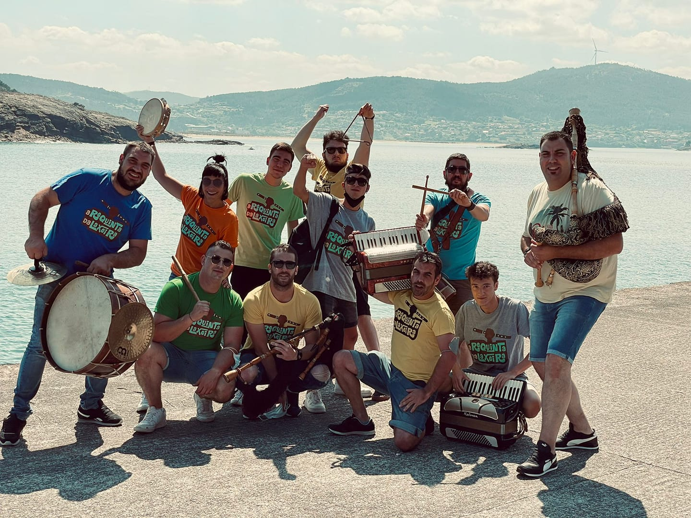
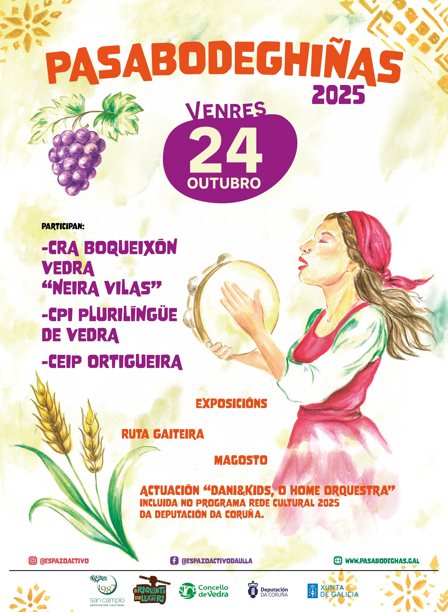
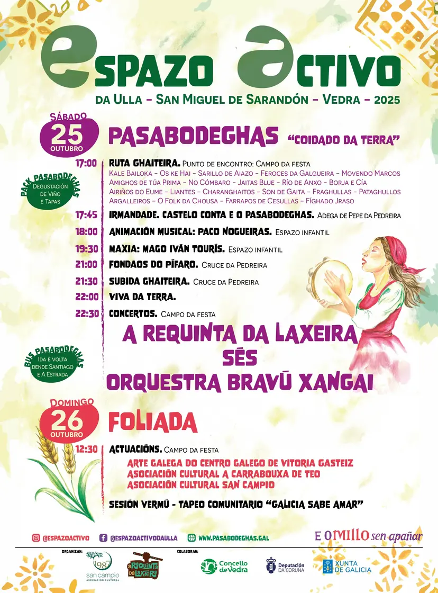
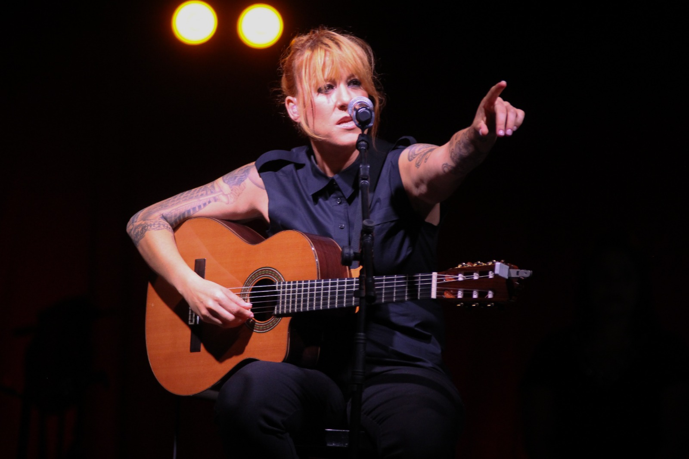
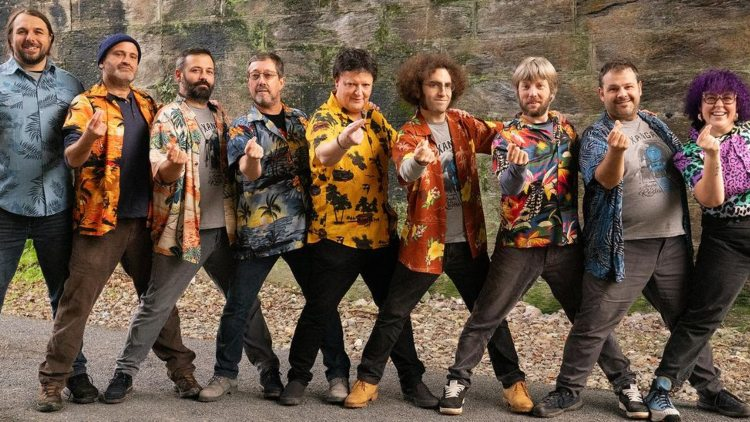

Cartel do Festival
Concurso de Carteis 2025
Este ano celebramos un concurso de carteis para a elección do deseño do 2025 no cal participaron 10 traballos.
Gañadora do Concurso
Patricia Riveira Laceiras
Un cartel que mostra o espirito do Pasabodeghas, e tamén das letras galegas que este ano foron adicadas á poesía popular oral, personificada nas cantareiras e pandeireteiras.

Programa


CENTRO DE INTERESE: "COIDADO DA TERRA"
O Coidado da Terra será o centro de interese nesta edición, xa que todas as persoas temos a responsabilidade de protexer e respectar o noso planeta, garantindo un futuro sostible para as vindeiras xeracións.
A Terra está a sufrir os efectos do cambio climático, da deforestación e da contaminación entre outros. Se non actuamos, periga a saúde do planeta e tamén a nosa.
Para concienciar sobre esta temática contaremos con exposicións e materiais didácticos do Consello da Cultura Galega, CEIDA, ADEGA, Amabul, MARCO, Voluntariado Interxeracional do Concello de Vedra, Agadea, Raiceiros, GDR Terras de Compostela, CRA Boqueixón-Vedra "Neira Vilas", CPI Vedra e CEIP Ortigueira.
IRMANDADE CO FESTIVAL "CASTELO CONTA"
Cada ano realizamos unha irmandade cun proxecto desenvolvido no medio rural.
Trátase de poñer en valor iniciativas do rural destacando o seu valor social, cultural e ambiental, visibilizando boas prácticas que protexan e dinamicen o territorio e que fomenten orgullo e identidade.
Nesta edición acollemos aos compañeiros/as do Festival Castelo Conta; unha iniciativa dos veciños e veciñas do Castelo (Culleredo), que achega comedia, tradición oral e cultura no rural.
Mapa
Recordamos que os menores de 12 anos deben ir acompañados dun adulto
Tedes un modelo de autorización de entrada para os menores que teñan máis de 12 anos e non vaian acompañados, que terán que levar cuberto e firmado.
Tedes un modelo de autorización de entrada para os menores que teñan máis de 12 anos e non vaian acompañados, que terán que levar cuberto e firmado.
Concertos

SES

ORQUESTRA BRAVÚ XANGAI
Pasabodeghas Bus
BUS DE IDA E VOLTA DENDE SANTIAGO
- Orixe (ida): Parada bus Corte Inglés (16:00 h.)
- Orixe (volta): Casa de Cultura de San Miguel de Sarandón (2:30 h. /hora nova)
BUS DE IDA E VOLTA DENDE A ESTRADA
- Orixe (ida): Restaurante Río Liñares (16:00 h.), Casa do Concello da Estrada (16:15 h.)
- Orixe (volta): Casa de Cultura de San Miguel de Sarandón (2:30 h. /hora nova)
Podes adquirir o Pack Pasabodeghas e os tickets de bus en:
( A partir das 19:00 h. do 3 de outubro)
VEDRA
- CENTRO COMERCIAL GARCÍA&GARCÍA
- CAFÉ BAR DERBY
- TABERNA O PATIO DE MÓNICA
- CAFÉ BAR A DORNA
BOQUEIXÓN
- LIBRERÍA LINO
TEO
- CASA PERNAS
SANTIAGO
- NOZZEO + BUS DENDE SANTIAGO
- VIÑOTECA VENTOSELA + BUS DENDE SANTIAGO
- VIÑOTECA A TIXOLA + BUS DENDE SANTIAGO
A ESTRADA
- A RIALA + BUS DENDE A ESTRADA
- HAMBURGUESERÍA FLORIDA
- RESTAURANTE RÍO LIÑARES + BUS DENDE A ESTRADA
LALÍN
- A TABERNA DO VENTO
Agradecementos
A edición número trece do Pasabodeghas xa vai alá. Pasada a resaca festeira, e despois de recoller todo, dende a organización queremos pedirvos desculpas polos erros que puidemos cometer e gracias pola vosa comprensión e apoio incondicional.
Queremos agradecer a toda a xente que fixo posible esta edición do Espazo Activo da Ulla - Pasabodeghas.
VECIÑANZA ADEGUEIRA
Pepe da Pedreira • A de Claudino • A de Carmela • González • Bouzón • Pegito
Manolo de Casimiro • Viñas do Fondal • Picanes • Adega Vella de Pereiras
Xunto coas súas familias e amizades, que sempre lles axudan, son o pilar fundamental desta festividade
COLABORADORES E SOCIOS
A tódalas persoas colaboradoras, veciñas, socias e parte da directiva
Que dunha maneira ou doutra traballaron e axudaron nesta edición do Pasabodeghas
Sodes o motor deste proxecto
PUNTOS DE VENDA
Vinoteca Ventosela • Restaurante A Tixola • Nozzeo • Taberna do Vento
Bar Derbi • A Dorna • O Patio • Libreria Lino
Hamburgueseria Florida • A Riala • Rio Liñares
Casa Pernas • Centro Comercial García & García
EMPRESAS COLABORADORAS
Pirotecnia Penide • Electricidade Manuel Fernández • Verbegal • Maxín • O Patio
Adega Chaos • Talleres López • Xeos da Ulla • Pollos Rivadulla
Supermercado Claudio Sarandon • Viajes Peillet • Autos Brea • E-lo? • Sonora
Carpas Pontevedra • Carpas Germinas • ACOE • Eixoprint • Panaderia Victoria
Hermitas "A Churrera" • Maderas Lata • La Viuda de Parada y Alvela • Pulperia Rey
Panaderia Lorenzo • Disgobe • Coca-cola • Mahou • Restaurante Rio Liñares
Grupo Bograo • A Riala • Mas Suárez • Mogo Abogados • Destilerías Pepe Albela
Decoración Chenlo • Carpintería González • Escenario móbil - Espectáculos Manolo
Pulpería Constante • Abanca • Food trucks Bruno • Super Ulla • Panadería Raviña
Yago Álvarez vídeo • Yoli Neira • Cremova • Mapoca S.L • Distribuciónes MAS
Frutas Doi • Droguería Sol • Manolo Álvarez • Saimon • Fontanería Iglesias
Mel Berce • Eva Vales • Mk Norte • Ambulancias Compostela • Tecnogal
Orlando Vázquez - Tartas Lestedo
GRUPOS MUSICAIS - ADEGAS E EIRAS
Kale Bailoka • Os ke hai • Sarillo de Aiazo • Feroces da Galgueira • Movendo Marcos
Amighos de túa prima • No Cómbaro • Jaitas Blue • Río de Anxo • Borja e cía
Airiños do Eume • Liantes • Charanghaitos • Son de Gaita • Fraghullas
Pataghullos • Argalleiros • Folk da chousa • Cunca Virada • Fíghado Jraso
FOLIADA DO DOMINGO
Arte galega do centro galego de Vitoria Gasteiz
Asociación cultural a Carrabouxa de Teo
Asociación Cultural San Campio
ESPAZO INFANTIL
Paco Nogueiras • Mago Iván Tourís • Anacos
CONCERTOS DA NOITE
Fondaos do Pífaro • Requinta da Laxeira • Sés • Orquestra Bravu Xangai
Pola música e as bailas
AGRADECEMENTOS ESPECIAIS
Manolo Pistón - Por asar o porco toda a noite
Eugenio e Carmen - Por deixarnos montar o espazo infantil na súa finca
Remedios - Por deixarnos a finca do Fondal
Ás/os donas/os das fincas dos aparcamentos
CULTURA E EDUCACIÓN
C.R.A. Boqueixón-Vedra "Neira Vilas" • CPI plurilingüe de Vedra • CEIP Ortigueira
ACUXUVE • AGADEA • Raiceiros • AMABUL • CEIDA • ADEGA
MARCO • obaixoulla.gal
Por encher as eiras de cultura poñendo en valor o coidado da terra
ARTESANÍA E GASTRONOMÍA
A tódalas artesás por estar sempre
GDR Terras de Compostela • AC Festa da Filloa de Lestedo
Por mostraren os seus sabores e saber facer
IRMANDADE
Organización do Castelo Conta
Pola irmandade destas dúas iniciativas que tratan de poñer en valor o rural
INSTITUCIÓNS
Conselleria de Cultura, Lingua e Xuventude
Deputación da Coruña
Concello de Vedra
ASOCIACIÓNS VECIÑAIS
Asociación de veciños de San Pedro de Vilanova
Asociación a Xesteira de Couso
Comisión de festas de San Miguel de Sarandón
TRANSPORTE
Ás persoas que organizaron autobuses dende diversos recunchos
A aquelas persoas e entidades que ao mellor non citamos aquí por despiste
Pero que axudaron a tope para seguir adiante con este proxecto
E POR SUPOSTO...
GRAZAS A TOD@S VOS
"FESTEIROS E FESTEIRAS"
SODES O MÁXIMO!
Moita festa, moita festa...
E o millo sen apañar!!!!